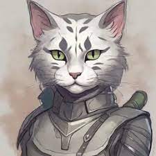

Classes
Races
Races de base
Races exotiques
Aarakocra
Aasimar
Changelin
Fée
Firbolg
Genasi
Gith
Goliath
Harengon
Kenku
Locathah
Owlin
Satyre- 
Tabaxi
Tortle
Triton
Verdan
Races monstrueuses
Règles spécifiques
Lancedragon
Eberron
Changement de Plan
Ravenloft
Ravnica
Spelljammer
Theros
Arcanes détérées
Historiques
Historiques communs
- Acolyte
- Agent de faction
- Agent de maison
- Anthropologue
- Archéologiste
- Artisan de clan
- Artisan de guilde
- Artiste
- Athléte
- Charlatan
- Charpentier
- Chasseur de primes urbain
- Chevalier
- Chevalier de l'ordre
- Contrebandier
- Courtisan
- Criminel
- Elevé par les géants
- Enquêteur
- Ermite
- Erudit cloitré
- Espion
- Etranger
- Fée perdue
- Gamin des rues
- Gardien de la ville
- Gladiateur
- Hanté
- Héritier
- Héros populaire
- Main de la Sorcière de Lumières
- Marchand de guilde
- Marin
- Membre de la tribu Uthgardt
- Mercenaire vétéran
- Noble
- Noble d'Eauprofonde
- Pêcheur
- Pirate
- Récompensé
- Ruiné
- Sage
- Sans visage
- Sculpteur de runes
- Soldat
- Soldat de la marine
- Voyageur lointain
La malédiction de Strahd
- Agent double du poing noir
- Insurgé de Phlan
- Voie du bandit de fer
- Nomade de Ticklebelly
- Prisonnier de Stojanow
- Victime du dragon
Mulmaster
- Aristocrate de Mulmaster
- Mineur d'Earthspur
- Peuple portuaire
- Réfugié de Phlan
- Spécialiste de caravane
Hillsfar
- Contrebandier d'Hillsfar
- Fanatique de l'ombre
- Gamin de la porte d'Hillsfar
- Identité secrète
- Marchand d'Hillsfar
- Réfugié de Cormanthor
- Sheriff commercial
Règles spécifiques
Acquisitions inc.
Amonkhet
Lancedragon
Innistrad
Planescape
Ravnica
- Agent de Golgari
- Anarchiste de Gruul
- Cultiste de Rakdos
- Fonctionnaire d'Azorius
- Ingénieur d'Izzet
- Initié de Selesnya
- Légionnaire de Boros
- Opérateur de Dimir
- Représentant d'Orzhov
- Scientifique simique
Strixhaven
- Etudiant de Lorehold
- Etudiant de Prismari
- Etudiant de Quandrix
- Etudiant de Silverquill
- Etudiant de Witherbloom
Wildemount
Spelljammer
Fonctionnalités facultatives d'historiques
Lancedragon
Innistrad
Planescape
Ravnica
- Agent de Golgari
- Anarchiste de Gruul
- Cultiste de Rakdos
- Fonctionnaire d'Azorius
- Ingénieur d'Izzet
- Initié de Selesnya
- Légionnaire de Boros
- Opérateur de Dimir
- Représentant d'Orzhov
- Scientifique simique
Strixhaven
- Etudiant de Lorehold
- Etudiant de Prismari
- Etudiant de Quandrix
- Etudiant de Silverquill
- Etudiant de Witherbloom
Wildemount
Spelljammer
Fonctionnalités facultatives d'historiques
Planescape
Ravnica
- Agent de Golgari
- Anarchiste de Gruul
- Cultiste de Rakdos
- Fonctionnaire d'Azorius
- Ingénieur d'Izzet
- Initié de Selesnya
- Légionnaire de Boros
- Opérateur de Dimir
- Représentant d'Orzhov
- Scientifique simique
Strixhaven
- Etudiant de Lorehold
- Etudiant de Prismari
- Etudiant de Quandrix
- Etudiant de Silverquill
- Etudiant de Witherbloom
Wildemount
Spelljammer
Fonctionnalités facultatives d'historiques
- Agent de Golgari
- Anarchiste de Gruul
- Cultiste de Rakdos
- Fonctionnaire d'Azorius
- Ingénieur d'Izzet
- Initié de Selesnya
- Légionnaire de Boros
- Opérateur de Dimir
- Représentant d'Orzhov
- Scientifique simique
Strixhaven
- Etudiant de Lorehold
- Etudiant de Prismari
- Etudiant de Quandrix
- Etudiant de Silverquill
- Etudiant de Witherbloom
Wildemount
Spelljammer
Fonctionnalités facultatives d'historiques
Spelljammer
Fonctionnalités facultatives d'historiques
Sorts
Equipements
Dons
Classiques
- Acteur
- Adepte Occulte
- Adepte de la métamagie
- Adepte élémentaire
- Adepte martial
- Alerte
- Ambidextre
- Âme du géant de la tempête
- Ardeur du géant de pierre
- Armure légère
- Armure lourde
- Armure moyenne
- Artificier initié
- Athléte
- Attaquant sauvage
- Bagarreur de taverne
- Braise du géant de feu
- Broyeur
- Canonnier
- Cartomancier
- Chanceux
- Chargeur
- Chef
- Chef inspirant
- Combattant initié
- Combattant monté
- Don du dragon chromatique
- Don du dragon de gemmes
- Don du dragon métallique
- Duelliste défensif
- Empoisonneur
- Esprit vif
- Expérimenté
- Expert en compétences
- Expert de l'arbalète
- Façonneur de runes
- Frappe des géants
- Fouilleur de donjon
- Furie du géant de glace
- Initié à la magie
- Linguiste
- Lutteur
- Maître d'armes
- Maître d'arme d'hast
- Maître d'armure moyenne
- Maître d'armure lourde
- Maître des grandes armes
- Maître du bouclier
- Marque du dragon aberrant
- Mobile
- Observateur
- Perceur
- Résiliant
- Résistant
- Robuste
- Rôdeur
- Ruse du géant de brume
- Sentinelle
- Soigneur
- Sorcier d'élite
- Sorcier de guerre
- Sorcier rituel
- Télékinésie
- Télépathe
- Tireur d'élite
- Touché de l'ombre
- Touché féerique
- Trancheur
- Tueur de mage
- Vigueur du géant de la colline
Règles spécifiques
Planescape
- Agent de l'ordre
- Cohorte du Chaos
- Descendant de Plan extérieur
- Descendant funeste
- Envoyé des terres lointaines
- Héritier vertueux
- Vagabond planaire
Strixhaven
Lancedragon
- Adepte des robes blanches
- Adepte des robes noires
- Adepte des robes rouges
- Chevalier de l'épée
- Chevalier de la couronne
- Chevalier de la rose
- Ecuyer de Solamnie
- Favori divin
- Initié à la haute sorcellerie
Changement de plan
Dons raciaux
- Ailes de dragon
- Agilité
- Agression des Orcs
- Ami des animaux
- Ami du peuple
- Chance abondante
- Constitution infernale
- Descendant de la lame
- Détermination humaine
- Détermination naine
- Disparition
- Exultation vampirique
- Faiseur de merveilles
- Flammes de Phlegethos
- Furie des Orcs
- Haute magie Drow
- Magie des Elfes des bois
- Magie des Svirfneblins
- Peau barbelée
- Peau de dragon
- Peur de dragon
- Porteur de rancune
- Précision elfique
- Prodige
- Seconde chance
- Téléportation féerique